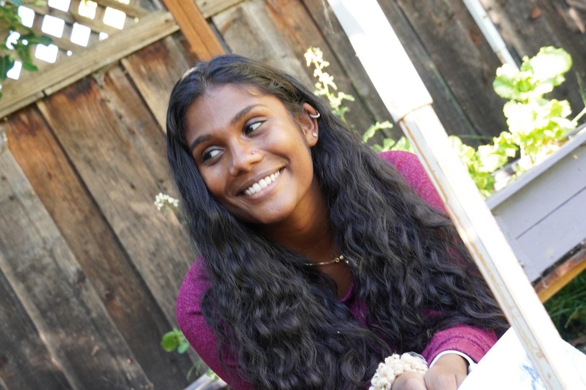

Benita Isaac
Junior Web Designer

Summary
Results-driven professional with a non-profit background transitioning to web design after completing a comprehensive bootcamp. Exceptional soft skills in communication, collaboration, and adaptability complemented by emerging hard skills in front-end development and UI/UX design. A detail-oriented and creative problem solver, dedicated to creating visually captivating and user-friendly web experiences.
Education
- Bachelor of Arts in Mathematics Education,
Minor in STEM Education - University of California at Santa Cruz (2014-2018)
Work Experience
- Campus Staff Minister | InterVarsity
June 2018 - June 2023
- Conducted regular team meetings, fostering collaboration and setting clear goals and expectations.
- Successfully raised over $50K annually through strategic fundraising efforts.
- Implemented recruitment initiatives, organized events, and developed marketing campaigns to attract new members.
- Delivered impactful presentations and speeches from the stage, effectively communicating key messages and inspiring attendees.
- Created compelling content, such as training materials, workshops, and resources, to develop the leadership skills of team members.
- Managed administrative tasks efficiently, including maintaining accurate expense reports through Workday
Skills
Goal setting and strategic planning
Persuasive communication and storytelling
Relationship building and donor stewardship
Curriculum and content design
Strong written and verbal communication
Public speaking and stage presence
Problem-solving and conflict resolution
Other
Hobbies Contact Me